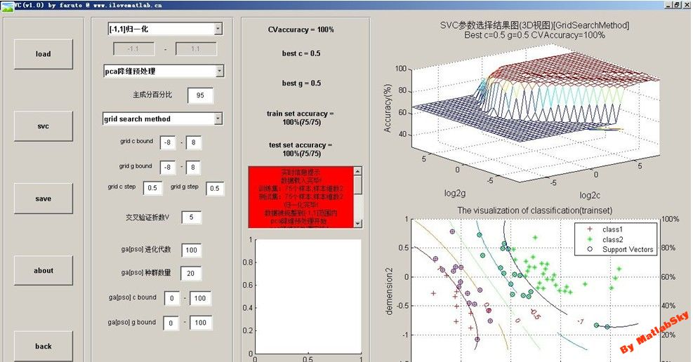

FQuantStudio
by LiYang_faruto @ faruto微博 faruto博客
Email:farutoliyang@foxmail.com
| 这里为一些在线测试demo和在线帮助文档，全部由MATLAB自动publish生成 |
| FQuantToolBox最新版下载地址：github |
| FQuantToolBox在线帮助文档：FQuantToolBoxHelpOnLine |
| 注意：请在MATLAB R2014b或更高版本环境下使用FQuantToolBox |
| 量化投资交流论坛：MATLAB技术论坛 |
| 量化投资交流讨论QQ群： QuantGroup 279908629 
|
| 作者faruto的联系方式：微博-faruto，博客，微信公众号-FQuantStudio(欢迎扫码关注) |
 |
| 书籍推荐： |


Contents
- 《量化投资：以MATLAB为工具》-基础篇-N分钟学会MATLAB(60<N<180)
- Demo_Tushare_MATLAB_FSDK
- FQuantToolBox是做什么用的？
- FQuantToolBox Online Demo(在线帮助文档)
- 期货策略回测的框架、实现、测试——以一个具有品种通用性和测试周期通用性的策略为例
- 股票策略回测的框架、实现、测试——以动量策略为例
- 一种简化的截面动量组合测试[Python&MATLAB]
- 一类简单的群体行为择时模型框架及实现测试
- 期权相关函数和工具-期权复式策略Demo
- MATLABToolBox-MatlabTraderGUI[持续更新-全部开源]
- MATLABToolBox-SVMToolBox[暂停更新-全部开源]
- MATLABToolBox-FuzzyClusterToolBox[暂停更新-全部开源]
- MATLABToolBox-EasyPaintToolBox[暂停更新-全部开源]
- 股指期货基础监控GUI
- 恒生UFX接口二次开发 Based on Matlab
- 其他信息
《量化投资：以MATLAB为工具》-基础篇-N分钟学会MATLAB(60<N<180)
点此阅读全文《量化投资：以MATLAB为工具》-基础篇-N分钟学会MATLAB(60<N<180)
Demo_Tushare_MATLAB_FSDK
通过Tushare_MATLAB_FSDK获取期货相关数据样例
通过Tushare_MATLAB_FSDK获取基金相关数据样例
通过Tushare_MATLAB_FSDK获取电影票房相关数据样例
通过Tushare_MATLAB_FSDK获取A股相关数据样例
通过Tushare_MATLAB_FSDK获取宏观利率相关数据样例
通过Tushare_MATLAB_FSDK获取指数相关数据样例
FQuantToolBox是做什么用的？
FQuantToolBox定位是个数据和回测工具箱，没有实盘交易相关接口的实现（但未来不排除增加相关功能）。
数据方面，FQuantToolBox数据获取函数完全基于网络的免费数据源（主要为新浪财经、雅虎财经等金融网站），不但可以积累历史数据，也可以进行动态更新， 现已实现的数据获取为A股市场的全部股票名称和对应代码（包含已退市股票）、A股市场的股票日线除权数据以及复权因子、A股市场的股票的除权除息信息、 A股市场的股票每日交易明细数据（Tick数据）、A股市场的的股票财务指标数据、A股市场的股票的三张表（资产负债表、现金流量表、利润表）数据， 未来数据方面会增加更多的数据，包括期货数据以及其他金融标的的数据，整体的思想还是完全基于网络获取和更新，完全免费。
基于网络的数据获取的实现方式大体过程就是网络数据网址寻找——> 网址分析——> urlread+正则表达式 数据提取。进行网络数据的抓取，正则表达式是一定会遇到的， MATLAB中有相应的正则表达式函数，有关正则表达式的东西这里不做展开，各位看官需要自行做些功课，FQuantToolBox工具箱的Doc文件夹内有个我重新整理过的 《MATALB正则表达式零基础起步教程.doc》文档，可以帮助您学习正则表达式相关的东西。
回测方面，FQuantToolBox工具箱当下提供了一个“如何构建基于MATLAB的回测系统”的demo样例，此部分内容来自我出版的《量化投资：以MATLAB为工具》的相关章节， 未来回测方面会增添更多的辅助函数和插件，方便您使用MATLAB进行股票以及期货相关策略的回测。
未来FQuantToolBox工具箱每次发布都会提供两个版本，无历史数据版本和有历史数据版本。无历史数据版本仅提供相关函数，你可以在自己本地运行相关脚本来批量获取历史数据； 有历史数据版本不但提供相关函数，还提供已经获取好的历史数据（A股市场全部股票股票名称和代码、日线数据、每日交易明细数据、除权除息信息、财务指标数据、三张变数据）， 节省您获取历史数据的时间，但相应的下载文件也会比较大（尤其股票每日交易明细数据），新的数据更新只需运行相应脚本函数就可以进行全市场最新数据的更新。
FQuantToolBox Online Demo(在线帮助文档)
点此阅读全文FQuantToolBox Online Demo
期货策略回测的框架、实现、测试——以一个具有品种通用性和测试周期通用性的策略为例
点此阅读全文 期货策略回测的框架、实现、测试——以一个具有品种通用性和测试周期通用性的策略为例
股票策略回测的框架、实现、测试——以动量策略为例
点此阅读全文 股票策略回测的框架、实现、测试——以动量策略为例
一种简化的截面动量组合测试[Python&MATLAB]
点此阅读全文 一种简化的截面动量组合测试[Python&MATLAB]
一类简单的群体行为择时模型框架及实现测试
期权相关函数和工具-期权复式策略Demo
期权相关函数在FQuantToolBox工具箱下的<OptionFunTool>文件夹内
请点击查看 期权复式策略Demo
MATLABToolBox-MatlabTraderGUI[持续更新-全部开源]
请点击查看下载源码 基于MATLAB的行情软件MatlabTraderGUI V1.1（Beta版本）
MATLABToolBox-SVMToolBox[暂停更新-全部开源]
请点击查看下载源码 Libsvm3.1-[FarutoUltimate3.1Mcode]
请点击查看下载源码 SVM_GUI_3.1[mcode]] （依赖包：Libsvm3.1-[FarutoUltimate3.1Mcode]）

MATLABToolBox-FuzzyClusterToolBox[暂停更新-全部开源]
请点击查看下载源码 FuzzyClusterToolBox
MATLABToolBox-EasyPaintToolBox[暂停更新-全部开源]
请点击查看下载源码 EasyPaintToolBox
股指期货基础监控GUI
More Info see BasisGUI
恒生UFX接口二次开发 Based on Matlab
No More Info
其他信息
| 这里为一些在线测试demo和在线帮助文档，全部由MATLAB自动publish生成 |
| FQuantToolBox最新版下载地址：github |
| FQuantToolBox使用交流讨论论坛：MATLAB技术论坛 |
| 量化投资交流讨论QQ群： QuantGroup 279908629
|
| 作者faruto的联系方式：微博-faruto，博客，微信公众号-FQuantStudio(欢迎扫码关注) |
|
| 书籍推荐： |